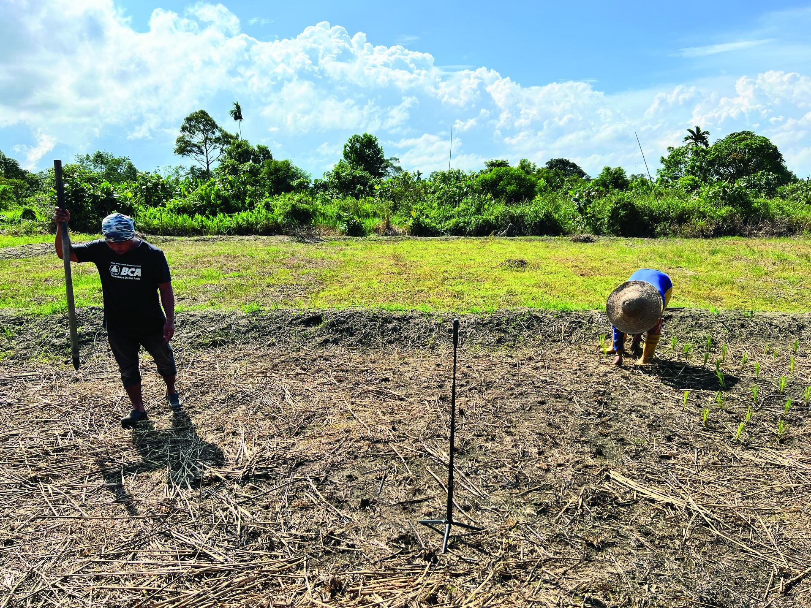
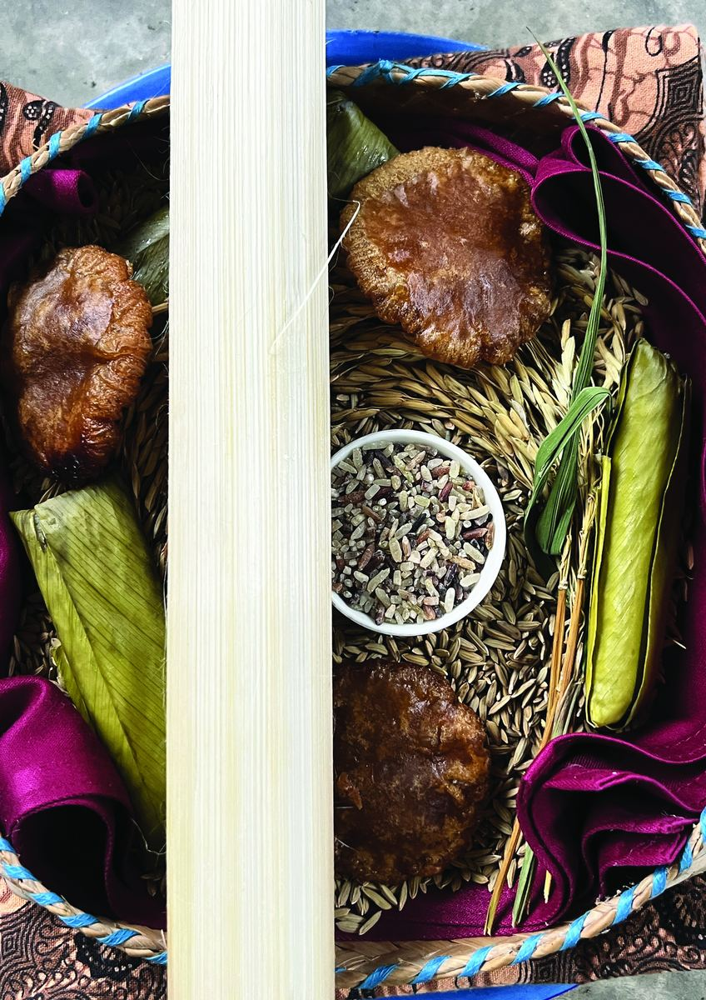
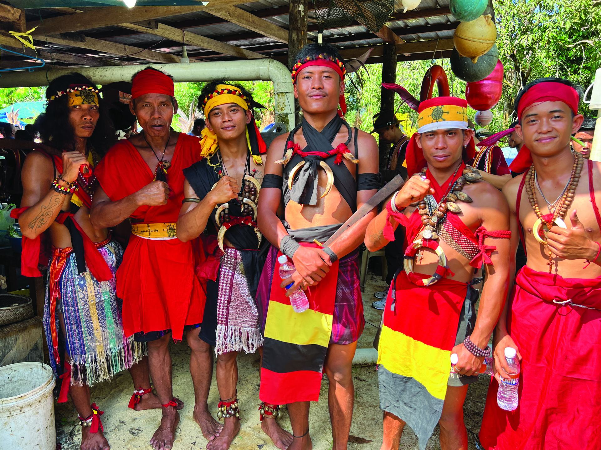
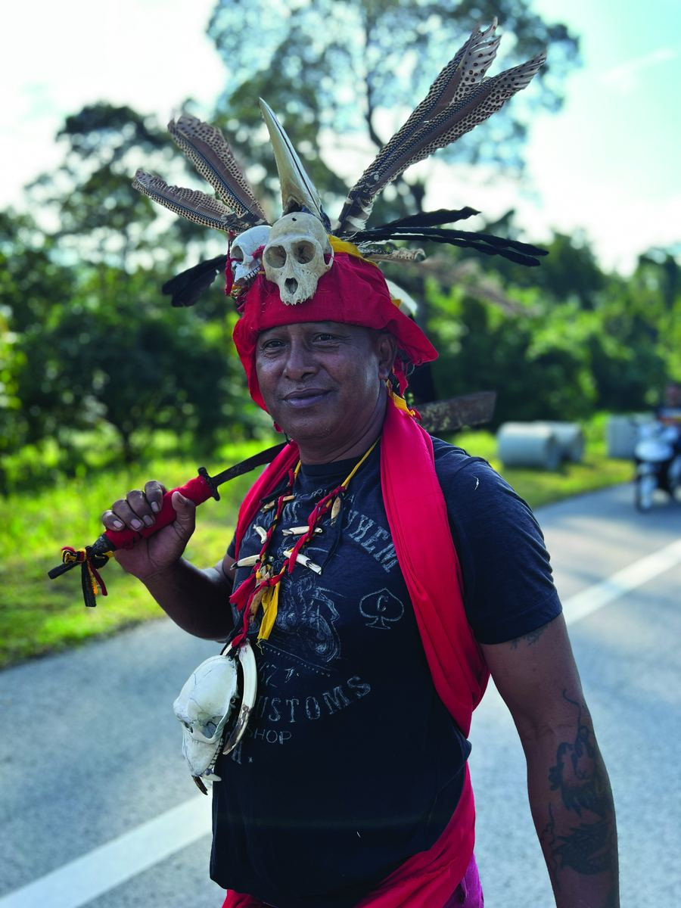
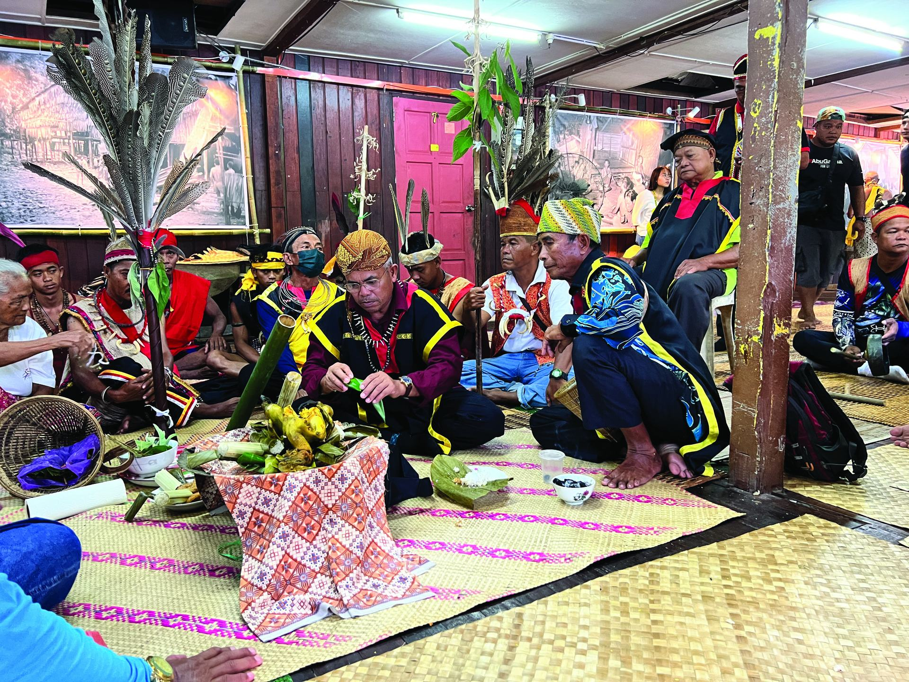
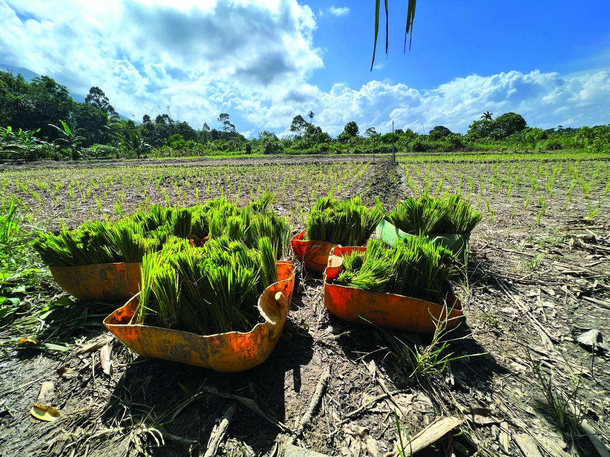
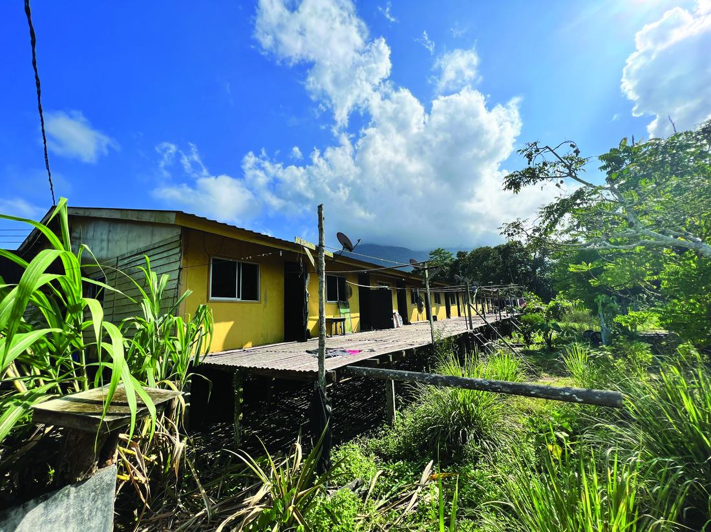
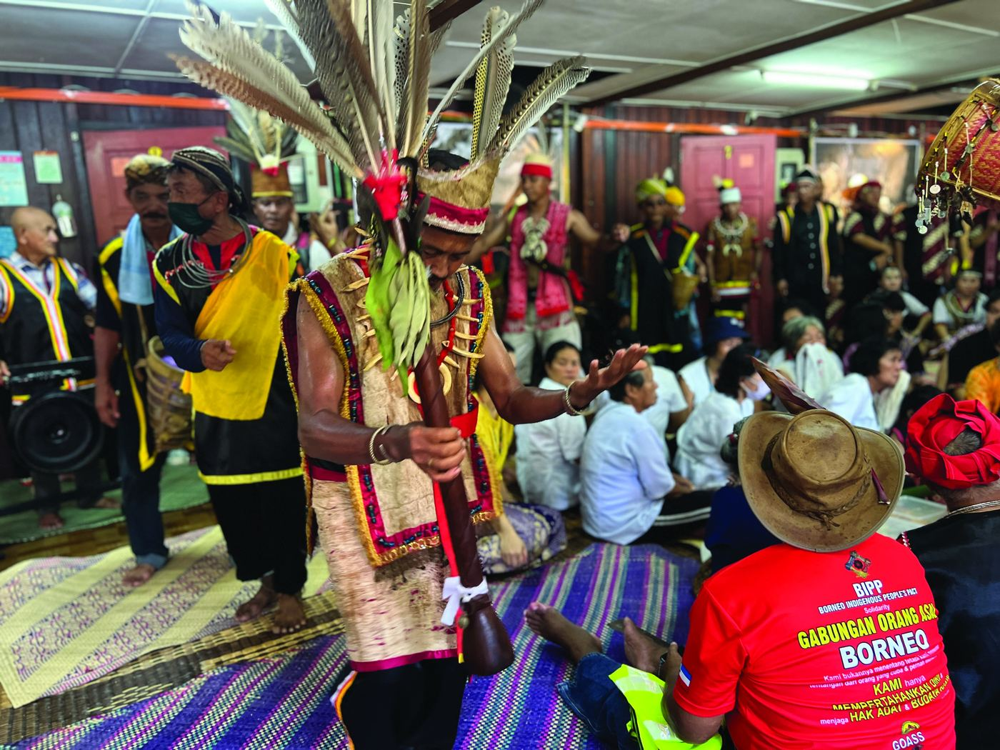

Gawe ka Padi
A Vertical Video Harvest
- Community
- Salako, Pueh, Sarawak
- Occasion
- Gawai harvest festival, June 2024
- Method
- Vertical video, smartphone filmmaking
A festival, held the way it's watched.
This research investigates the potential of vertical video as a medium for capturing and preserving intangible cultural heritage, with a specific focus on the Gawai Festival celebrated by the Salako community.
Gawe ka Padi, co-produced by Augustus Segar, Max Schleser, and Ida Badiozaman, documents the traditions of the Salako community in Pueh, Sarawak, Malaysia.

What potential does vertical video have as a community-driven storytelling approach?The research question

The harvest, celebrated again.
The vertical video captures the Gawai festival by the Salako community in Pueh, Sarawak, Malaysia. Following the disruption of the global pandemic, the Salako community could celebrate their harvest festival again in June 2024.
Gawe ka Padi documents the Salako traditions in the longhouse communities on Borneo Island. The end of the paddy harvesting season is celebrated by the community coming together to share food and drinks, as well as traditional music and dance.

A fresh cinematic perspective, offering an immersive portrayal of the Salako community's lived experience.
Filmed the way a phone is held.
The decision to employ vertical video was deliberate, as it offers a fresh cinematic perspective that allows for an immersive portrayal of the Salako community's lived experience. By using smartphone filmmaking in a non-intrusive manner, this project captures the festival's cultural practices in an authentic and engaging way, providing an intimate experience of the Salako community.


Those who no longer live in the remote parts of Sarawak travel back to celebrate — bringing the community together across all generations.
From a longhouse in Pueh to stages worldwide.
The outcomes of this research have resulted in notable opportunities, including keynote invitations at Good Design Week Sarawak, the Community Digital Storytelling Festival in Dhaka, Bangladesh, and Mobile Hangzhou, China. In 2024, Gawe ka Padi also received recognition at the Nitiin Film Festival in Malaysia and the SmartFone Flick Fest in Australia — awarded Nitiin Best Mobile Short Film and the SF3 Best Social Video Award.


The research highlights innovative documentary techniques that not only preserve cultural heritage but also inspire future generations to use technology to tell their stories. The vertical video of Gawe ka Padi aligns with the objectives of the UNESCO Convention for the Safeguarding of Intangible Cultural Heritage (UNESCO 2019).

Co-produced across disciplines.
Published 18 October 2023, at Good Design Week, Swinburne University of Technology Sarawak Campus.